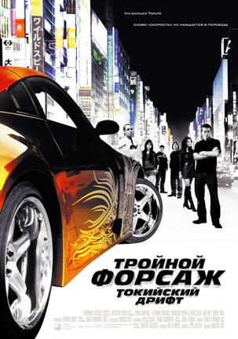

Тройной форсаж: Токийский дрифт - американский боевик 2006 года режиссёра Джастина Лина по сценарию Криса Моргана. Это самостоятельное продолжение фильмов «Форсаж» (2001) и «Двойной форсаж» (2003), а также третья (в хронологическом порядке шестая) часть франшизы «Форсаж». В фильме снимались Лукас Блэк и Bow Wow, и он рассказывает о школьном автолюбителе Шоне Босуэлле (Блэк), который отправляется жить в Токио со своим отчужденным отцом и находит утешение, исследуя городское дрифт-сообщество[6].
Перехід на першу сторінку